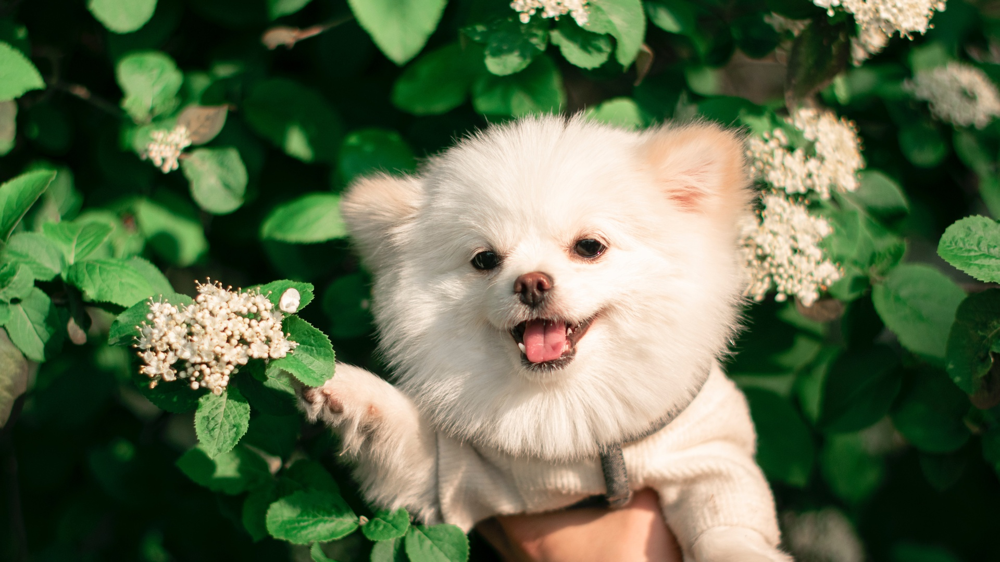
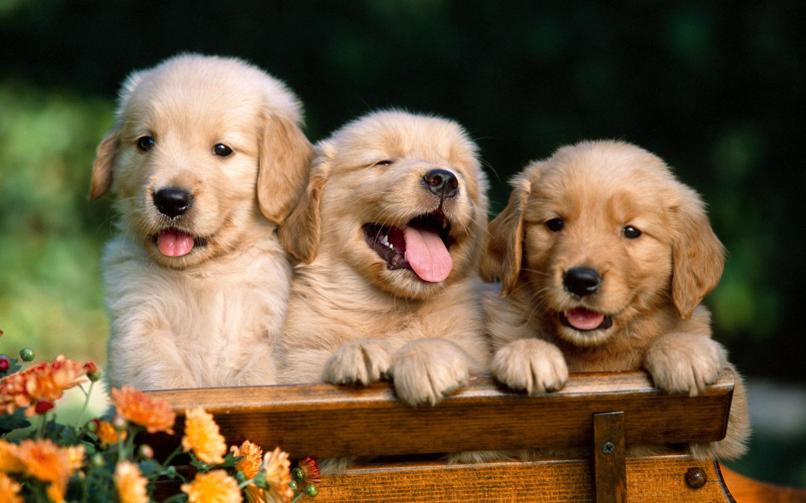
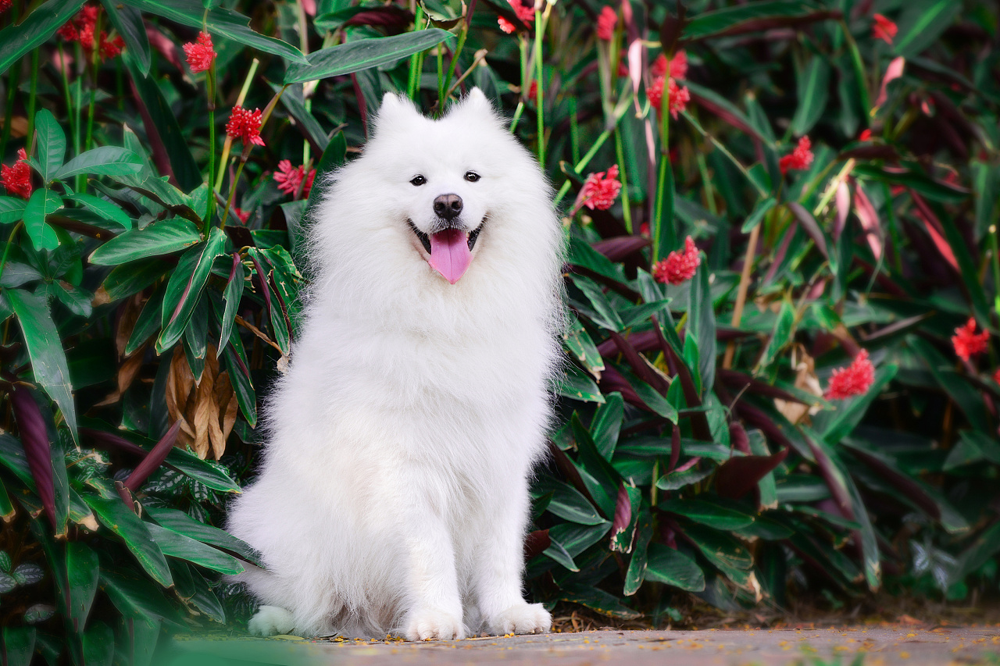
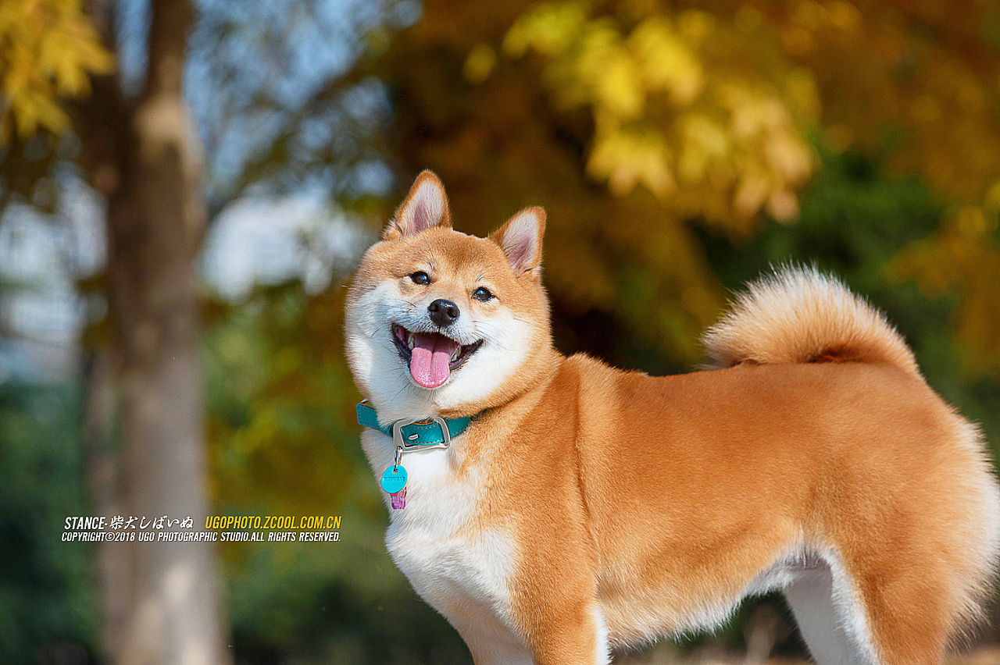
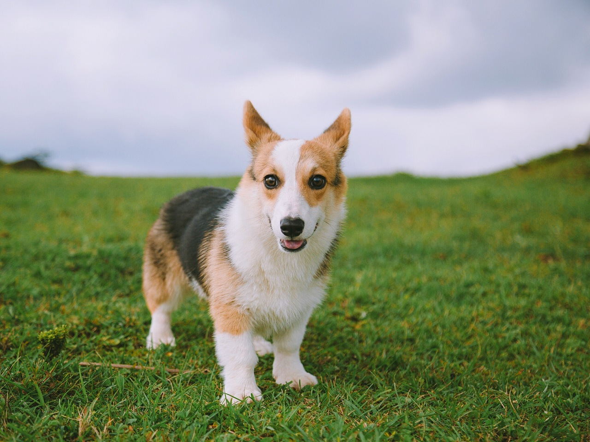

狗狗大全
爱狗者的乐园
种类鉴赏
狗狗种类
|
狗粮推荐
|
护理知识
|
狗狗训练
|
狗狗性情
|
狗狗毛色
|
狗狗零食
|
狗狗玩具
|
狗狗健康
|

一个能让你了解更多狗狗知识的网站
金
毛
金毛寻回犬性格沉稳，充满信心，忠诚，是理想的伴侣犬。凭借其出色的自身表现，已成为大型犬种中最具人气的犬种，而且还在世界各地担任搜救犬、狗医生、导盲犬等任务，是近200个犬种中最具价值的犬种之一。

萨
摩
耶
萨摩耶犬(英文：Samoyed)，别称萨摩耶，原是西伯利亚的原住民萨摩耶族培育出的犬种。该犬全身长有浓密的被毛，毛长适中且直；头呈楔形；眼睛颜色深为佳，两眼凹陷，间距大，为杏仁形；鼻梁较长，鼻端、口周多呈黑色，嘴角上翘；直立的耳朵很厚，呈三角形，尖端略圆；脚大而长，比较平，似野兔的足，趾稍分开；趾尖呈拱形肉垫厚而硬，趾之间有保护的毛，脚圆形或似猫足。到了20世纪，它常被人们用于极地探险，并受到世界各地爱狗人士的喜欢。[5] 萨摩耶犬温和而友善，从不制造麻烦；它天生聪明，对主人绝对忠诚。同时，它身体强壮、奔跑速度快，适应性强，机警，充满活力，乐于服务，进攻性不强，这使得萨摩耶犬成为人类忠实的朋友与伴侣，并逐渐进入千家万户。萨摩耶犬不单单是宠物，它也是优秀的工作犬，它是极地探险的英雄，是危险之地营救的能手。在得到良好照顾的情况下，该犬一般寿命为12~14年左右

柴
犬
柴犬是日本犬中的小型犬，为古老品种，经长期豢养培育，养成忠实、服从、忍耐的天性。柴犬警觉性高，平时习惯警觉地站在高处向下观望，个性机敏、独立，身体强健，动作敏捷，以前主要是被人类训练用来猎捕小动物，曾是穿梭于深山林间的狩猎好手，故称之为柴犬。

柯
基
威尔士柯基犬属于小型犬，其实它是披着小型犬外衣的大型犬。性格非常的坚强稳健，胆子大，性格机警，能很好的守卫家园的安全，适合与小孩子相处，守卫小孩。很多朋友认为小型犬都有一种娇羞、甚至神经质的情感，但是柯基犬却刚刚相反，它无惧无畏，不凶狠不羞怯，是小型犬种非常受欢迎的守卫犬之一。椭圆形,爪短,肉趾力强,脚尖相当隆起.被毛中等长度,相当密集,毛色油黑貂色,芥茉色,黑与褐,部分是白色.柯基犬胸部状似围兜的被毛是其他品种没有的.
